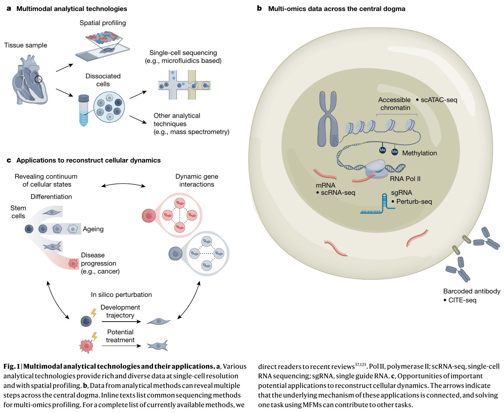
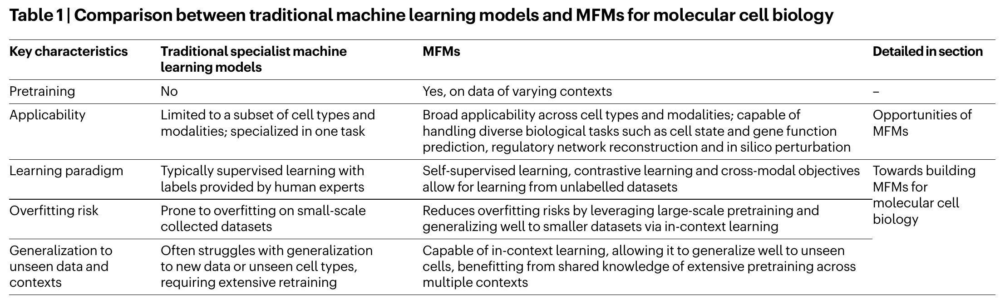
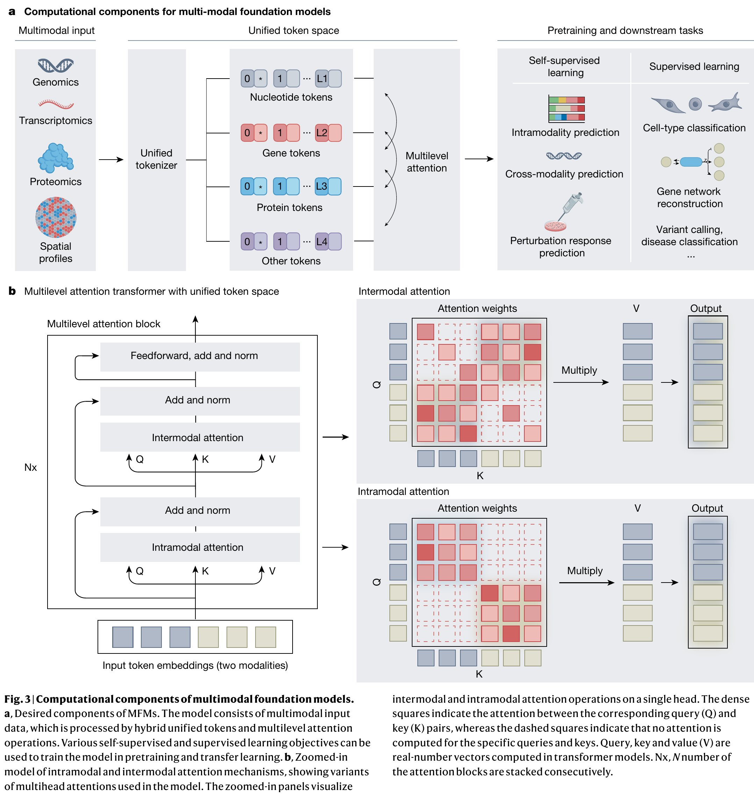
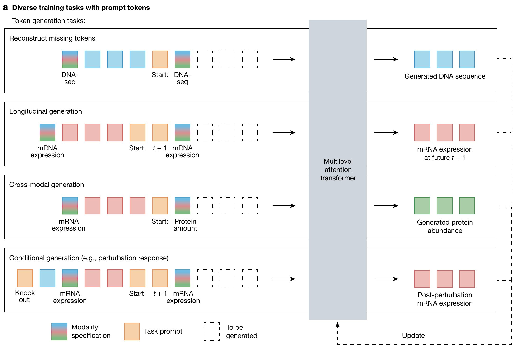
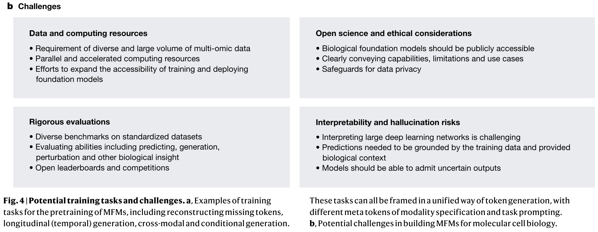

简单地说，这篇论文提出了一种用 AI 大模型统一理解和预测分子生物学的愿景。就像 ChatGPT 可以通过海量文本学习语言规则并回答各种问题一样，作者设想训练一个"细胞版GPT"——在 DNA、RNA、蛋白质等各类生物数据上进行预训练，从而学会细胞内的分子交互规则，最终能回答诸如"这个基因在癌细胞中起什么作用？""如果敲除这个基因，细胞会怎样？""这两种细胞类型有什么区别？"等问题。
| 术语 | 含义 |
|---|---|
| 基础模型（Foundation Model） | 在广泛数据上以自监督方式预训练的大型深度神经网络，通过迁移学习适配到各类下游任务 |
| 多模态基础模型（MFM） | 能够接受多种组学数据类型（转录组、蛋白质组、表观组等）作为输入的基础模型 |
| Transformer | 基于注意力机制的深度学习架构，是现代基础模型的核心技术基石 |
| Token（令牌） | 输入数据的基本处理单元。在自然语言中是词片段，在MFM中是基因、蛋白质或核苷酸等 |
| 预训练（Pretraining） | 在海量无标注数据上训练模型学习通用表示的过程 |
| 迁移学习（Transfer Learning） | 将预训练学到的知识适配到特定下游任务（如微调、上下文学习） |
| 自监督学习（Self-supervised Learning） | 从数据本身构造监督信号（如掩码预测），无需人工标注 |
| 组学（Omics） | 高通量分子测量技术的统称，如基因组学、转录组学、蛋白质组学 |
分子细胞生物学有一个根本的追问：DNA、RNA、蛋白质和代谢物之间是如何动态交互和调控的？如果我们能完全理解这些交互，就能模拟和预测细胞从发育到衰老、从健康到疾病的全过程——这本质上就是"虚拟细胞"（virtual cell）的梦想。
打个比方：如果你想知道一个城市如何运作，你需要知道每条道路（通路）的走向、每个红绿灯（调控点位）的设置、交通流量（表达水平）的变化。分子生物学家就是在做"细胞这座城市的交通规划"。
过去几十年，研究者尝试用常微分方程（ODE）来建模全细胞。2012年，第一篇全细胞模型用28个ODE模拟了生殖支原体（Mycoplasma genitalium）的细胞过程。
突破一：高通量组学技术呈指数级增长
突破二：大规模机器学习预训练范式的成熟
scGPT（Cui et al., 2024, Nature Methods）——由本文作者之一Haotian Cui主导——在超过 3300 万个单细胞数据上预训练了一个生成式Transformer，学习细胞和基因的表示。预训练后，scGPT 可以通过微调适配到细胞类型注释、基因扰动预测、多组学整合等下游任务。这是 MFM 愿景在单细胞转录组方向的早期实现。
在给出 MFM 的定义之前，先看一幅全景图：它展示的是数据端——多模态测量技术能产出什么数据——以及这些数据指向的应用端，这正是 MFM 愿景的两个支点。

原论文 Figure 1：多模态分析技术及其应用。(a) 多模态分析技术：组织样本解离为单细胞后，可通过微流控单细胞测序获取单细胞分辨率的分子数据，也可直接做空间组学（Spatial profiling），或以质谱等其他分析技术补充测量。(b) 沿中心法则的多组学数据：同一套方法体系可以并行读出染色质可及性（scATAC-seq）、基因表达（scRNA-seq，经 RNA Pol II）、甲基化修饰、扰动后的转录响应（Perturb-seq，经 sgRNA）以及表面蛋白标志（CITE-seq，条形码抗体）——覆盖从 DNA 到 RNA 再到蛋白质的多个层面。(c) 重建细胞动力学的应用机遇：从干细胞出发，刻画分化、衰老与疾病进展（如癌症），进而走向计算机内扰动（in silico perturbation）、发育轨迹推演与潜在治疗；箭头表示这些应用的底层机制彼此相连——解决其中一个任务（如扰动预测）能促进其他任务（如发育轨迹推断）。这正是后文"一个 MFM 通吃多任务"愿景的数据基础。
图源：Cui et al., Nature (2025)。
传统机器学习模型像是"专才"——一个模型只擅长一项特定任务（比如只识别猫的照片）。基础模型（Foundation Model）则像是"通才"——在海量多元化数据上预训练后，同一个模型可以快速适应到各种各样的任务。
核心公式：大规模预训练 → 习得通用知识和表示 → 迁移学习适配下游任务
| 特征 | 传统专业模型 | MFM |
|---|---|---|
| 预训练 | 无 | 在多样化多模态数据上大规模预训练 |
| 适用性 | 限于特定细胞类型/模态/单一任务 | 跨细胞类型、跨模态、多任务通用 |
| 学习范式 | 通常需要人工标注的有监督学习 | 自监督+对比学习+跨模态目标，可从无标注数据中学习 |
| 过拟合风险 | 小数据集上容易过拟合 | 大规模预训练降低了过拟合风险 |
| 泛化能力 | 对新数据/新细胞类型泛化较差 | 通过上下文学习泛化到未见的细胞和条件 |
上方表格是简化转写，此处附原论文 Table 1 截图，可对照原文的完整表述（含右侧"详细见哪一节"列）。

原论文 Table 1：传统机器学习模型与 MFM 对比。行 = 五个关键特征（预训练、适用性、学习范式、过拟合风险、对未见数据与语境的泛化）；中间两列分别给出传统专业模型与 MFM 的对应表述，内容与上方转写表一致；最右一列 Detailed in section 指示每个特征在论文的哪一节详细展开——如"适用性"指向 Opportunities of MFMs 一节、"学习范式"指向 Towards building MFMs 一节。
图源：Cui et al., Nature (2025)。
Transformer 的本质是通过注意力机制（Attention）来建模输入序列中任意两个元素之间的交互强度。在自然语言中，这对应着"一个词对另一个词的语义相关性"；在分子生物学中，这对应着"一个基因对另一个基因的调控强度"或"一个蛋白质与另一个蛋白质的相互作用强度"。
也就是说，Transformer 的注意力机制天然地与生物分子交互网络的本质结构同构——生物分子之间的调控、互作、信号传导本质上就是一种"生物注意力"。
| 模型 | 领域 | 关键贡献 |
|---|---|---|
| AlphaFold2 (Jumper 2021) | 蛋白质结构预测 | 利用注意力机制建模氨基酸之间的空间关系 |
| ESM2/ESM3 (Meta) | 蛋白质语言模型 | 在数亿蛋白质序列上训练，可预测结构、功能和新蛋白质生成 |
| Enformer (Avsec 2021) | 基因组学 | 从 DNA 序列预测基因表达和染色质状态 |
| scGPT (Cui 2024) | 单细胞转录组 | 3300万细胞预训练，适配到细胞注释、扰动预测等 |
| GeneFormer (Theodoris 2023) | 基因网络 | 3000万单细胞转录组预训练，实现基因网络预测 |
传统生物学是"假设驱动"的——研究者基于已有知识提出假设，设计实验验证，修正理论。而 MFM 倡导一种"数据驱动 + 实验室在环"的新范式：
这就像一群科学家与一个 AI 助手在对话：AI 说"我对这几个细胞系的预测最没把握，建议你先做这些"，科学家做完实验后，AI 变得更聪明，再给出下一轮建议。
即使是同一组织的细胞，其分子状态也可能天差地别——就像同一公司的员工各有不同的分工和状态。这种细胞异质性是癌症治疗失败（耐药亚克隆）、发育异常和退行性疾病的关键因素。MFM 可以：
人类基因组有约2万个编码蛋白的基因，但其中大量基因的功能尚未被充分理解。MFM 通过在大规模多组学数据中学习基因之间的共表达、互作和调控模式，可以：
现有方法常依赖单一模态：WGCNA 只用 RNA 表达数据推断共表达网络；ATAC-seq 只测量染色质开放区域。MFM 可以同时利用 RNA 表达 + 染色质可及性 + 蛋白质丰度 + 空间位置来综合推断基因间调控关系，这就像断案时综合 DNA、指纹、监控录像和目击证词——比任何单一证据都更可靠。
这是 MFM 最具革命性的应用。如果你想知道"敲除基因A会不会杀死癌细胞？"，传统方法需要花数周到数月做实验。MFM 设想在模型的参数空间中模拟这种扰动，得到一个计算预测，然后只用实验验证最有前途的候选——就像一个"分子生物学飞行模拟器"。
本节是论文的技术核心。作者提出了构建 MFM 的四大计算组件（Fig. 3），就像汽车需要发动机、变速箱、轮子和方向盘一样，MFM 需要：(1) 将不同组学数据"翻译"成统一的"语言"；(2) 在同一模态内部和多模态之间分别建模交互；(3) 设计聪明的"考题"让模型自学；(4) 融入人类积累的生物先验知识。
下面这张 Fig. 3 正是上述架构的全景图：面板 a 对应第 (1)(2) 两个组件的串联数据流，面板 b 是对多级注意力的内部拆解。

原论文 Figure 3：多模态基础模型的计算组件。(a) 期望组件总览（数据流从左到右）：基因组学/转录组学/蛋白质组学/空间谱等多模态输入 → 统一分词器（Unified tokenizer）→ 统一 Token 空间（核苷酸 Token、基因 Token、蛋白质 Token 及其他 Token，对应 4.1 节的层级化设计）→ 多级注意力（Multilevel attention，对应 4.2 节）→ 预训练与下游任务（自监督学习、有监督学习，下游覆盖模内预测、跨模态预测、扰动响应预测、基因网络重建、变异检测与疾病分类等）。(b) 模内/模间注意力机制放大图：$Nx$ 个"多级注意力块"依次堆叠，每块内先做模间注意力（Intermodal attention）、再做模内注意力（Intramodal attention），各自经 Add & Norm 与 Feedforward 处理后融合输出；两侧放大面板展示单头的 Q/K/V 计算与注意力权重矩阵——实心方块表示对应 Query–Key 对之间计算注意力，虚线方块表示不计算——这正是 4.2 节数学部分 $M_{\text{intra}}$、$M_{\text{inter}}$ 掩码矩阵的图形化表达。
图源：Cui et al., Nature (2025)。
MFM 的第一个关键技术挑战是：如何将性质迥异的组学数据（连续的基因表达值、离散的DNA序列、三维的蛋白质结构）转化为同一个模型能处理的统一格式？
作者的解决方案是借鉴 NLP 中的 "tokenization"（分词）策略，构建层级化的统一 Token 空间：
在 NLP 中，tokenization 将一段文本拆分为词片段：
"The cat sat on the mat" → ["The", "cat", "sat", "on", "the", "mat"]
在 MFM 中，tokenization 将分子数据拆分为生物学上有意义的单元：
一个细胞的转录组 → [GeneTP53, GeneBRCA1, ..., GeneACTB]
一段 DNA 序列 → [A, T, G, C, C, G, A, T, ...]
关键是：所有类型的 Token 共享同一个嵌入空间，就像不管中文还是英文，都翻译成同一个"概念向量空间"。
分子生物学数据天然具有多尺度结构——从单个碱基对到基因，从基因到通路，从通路到细胞状态。作者提出使用混合 Transformer 架构来分层建模这些尺度：
模内注意力（Intramodal Attention）：同一层级 Token 之间的自注意力操作。
模间注意力（Intermodal Attention）：跨层级、跨模态 Token 之间的注意力操作。
在计算机视觉中，Swin Transformer 使用分层的局部+全局注意力来高效处理大图像——先在每个小图像块内部做注意力，再在块之间做注意力。MFM 的多级注意力同理——先在"基因模块"内部建模基因-基因关系，再在"跨组学模块"间建模转录组-蛋白质组的关系。
有趣的对比：Swin Transformer 处理的是空间层级（像素→块→图像），MFM 处理的是生物层级（核苷酸→基因→通路→细胞）。
Transformer 中，输入序列的每个元素被编码为一个向量（token embedding）。给每个 token 分配三个角色——Query（Q，我在找什么）、Key（K，我能提供什么）、Value（V，我传递什么信息）——通过三个可学习的线性变换得到：
\[ Q = XW^Q,\quad K = XW^K,\quad V = XW^V \]其中 \(X \in \mathbb{R}^{n \times d}\) 是 \(n\) 个 token 的嵌入矩阵（每个 \(d\) 维），\(W^Q, W^K, W^V \in \mathbb{R}^{d \times d_k}\) 是可学习的权重矩阵。核心单头计算为：
\[ \text{Attention}(Q, K, V) = \text{softmax}\left(\frac{QK^T}{\sqrt{d_k}}\right)V \]| 步骤 | 操作 | 输出形状 | 含义 |
|---|---|---|---|
| ① | \(S = QK^T\) | \(n \times n\) | 每个 Query 与每个 Key 的相似度（内积越大 → 越相关） |
| ② | \(S / \sqrt{d_k}\) | \(n \times n\) | 缩放——防止 \(d_k\) 太大时内积值过大、softmax 退化为 one-hot |
| ③ | \(A = \text{softmax}(S/\sqrt{d_k})\) | \(n \times n\) | 每行归一化为概率分布（和为1）——这就是 注意力权重矩阵 |
| ④ | \(O = AV\) | \(n \times d_k\) | 用注意力权重对 V 加权求和——每个位置的输出是所有位置 V 的加权组合 |
直观理解：第 \(i\) 个位置的输出 = "关于我要找的东西（\(Q_i\)），我和每个位置 \(j\) 的匹配度有多高（\(Q_i \cdot K_j\)），我就按这个匹配度去取位置 \(j\) 的实际信息（\(V_j\)）并加权汇总。"
单头只学一种"关联模式"。多头让模型同时学多种关系：
\[ \text{MultiHead}(Q, K, V) = \text{Concat}(\text{head}_1, \ldots, \text{head}_h)W^O \] \[ \text{head}_i = \text{Attention}(QW_i^Q, KW_i^K, VW_i^V) \]\(h\) 个头各自有独立的 \(W_i^Q, W_i^K, W_i^V\) 矩阵，最后拼接后经 \(W^O\) 变换融合。
Cui 论文的核心架构创新在于：用注意力掩码（attention mask）控制哪些 token 对之间允许计算注意力，将全连接自注意力拆成两套独立操作：
模内注意力（Intramodal）：
\[ O_{\text{intra}} = \text{softmax}\left(\frac{QK^T}{\sqrt{d_k}} \odot M_{\text{intra}}\right)V \]\(M_{\text{intra}}\) 是一个 \(n \times n\) 的二元掩码：仅当 token \(i\) 和 token \(j\) 属于同一模态且同一层级时 \(M_{ij}=1\)，否则 \(M_{ij}=0\)（mask 位置在 softmax 前设为 \(-\infty\)，使注意力权重归零）。
模间注意力（Intermodal）：
\[ O_{\text{inter}} = \text{softmax}\left(\frac{QK^T}{\sqrt{d_k}} \odot M_{\text{inter}}\right)V \]\(M_{\text{inter}}\) 仅在不同模态或不同层级的 token 之间打开（\(M_{ij}=1\)），同模态内部关闭。最终输出为两者的组合（加权加和或在 Transformer Block 中交替堆叠）：
\[ O = O_{\text{intra}} + O_{\text{inter}} \]对比传统全连接 Transformer（所有 token 对所有 token 计算注意力，复杂度 \(O(n^2)\) 且无法区分不同类型的交互），多级注意力实现了：模内聚焦同类交互的高分辨率模式（基因调控网络/蛋白互作网络），模间聚焦跨类交互的宽视野模式（转录→翻译→代谢），两者互不干扰但信息最终融合。
生物分子之间的调控、互作、信号传导本质上就是一种"生物注意力"——TP53 转录因子"关注"MDM2 的启动子区域来激活其转录，转录后 MDM2 蛋白反过来"关注"p53 蛋白进行泛素化降解。Transformer 的 \(QK^T\) 内积计算恰好等价于评估所有分子对之间的"交互强度"：
| AI 概念 | 生物学等价 |
|---|---|
| \(Q_i \cdot K_j\)（注意力得分） | 分子 \(i\) 与分子 \(j\) 之间的物理/调控交互强度 |
| softmax 归一化 | 在分子的所有"交互伙伴"中按相对强度分配"影响力预算" |
| 加权求和 \(AV\) | 每个分子的新表示 = 所有交互伙伴对其贡献的加权汇总 |
| \(M_{\text{intra}}\) 掩码 | 约束"同类型分子之间才能直接交互"（如蛋白-蛋白互作网络） |
| \(M_{\text{inter}}\) 掩码 | 约束"跨类型分子之间才能交互"（如转录因子-基因启动子） |
与计算机视觉先行者的对应关系：
| CV 模型 | CV 层级 | 生物学类比 |
|---|---|---|
| Swin Transformer | 小窗口内局部注意力 → 合并窗口后全局注意力 | 基因模块内模内注意力 → 跨组学模块间模间注意力 |
| MultiScale ViT | 同时处理多个分辨率下的图像块 | 同时处理核苷酸、基因、通路三个尺度 |
核心思想一致：不把所有信息一次性摊平做全连接注意力，而是分层、分块、分尺度地做——每一层注意力只负责自己那一层的"语言"。
假设一个微型 MFM，输入包含两个模态共 4 个 token，每个是 \(d=4\) 维嵌入向量：
| Token | 嵌入向量 | 模态 |
|---|---|---|
gene_TP53 | [1.0, 0.2, 0.5, 0.1] | 转录组（mRNA） |
gene_MDM2 | [0.3, 0.9, 0.4, 0.2] | 转录组（mRNA） |
prot_p53 | [1.1, 0.1, 0.6, 0.0] | 蛋白质组（protein） |
prot_MDM2 | [0.2, 1.0, 0.5, 0.3] | 蛋白质组（protein） |
设 \(d_k = 4\)，\(W^Q, W^K, W^V\) 用单位矩阵简化。仅对基因模态的 2 个 token 计算：
\[ QK^T = \begin{bmatrix} 1.0 & 0.2 & 0.5 & 0.1 \\ 0.3 & 0.9 & 0.4 & 0.2 \end{bmatrix} \times \begin{bmatrix} 1.0 & 0.3 \\ 0.2 & 0.9 \\ 0.5 & 0.4 \\ 0.1 & 0.2 \end{bmatrix} = \begin{bmatrix} 1.30 & 1.70 \\ 1.70 & 1.10 \end{bmatrix} \] \[ \frac{QK^T}{\sqrt{4}} = \begin{bmatrix} 0.65 & 0.85 \\ 0.85 & 0.55 \end{bmatrix} \] \[ \text{softmax（按行）} = \begin{bmatrix} 0.45 & 0.55 \\ 0.57 & 0.43 \end{bmatrix} \]注意力权重的生物含义：
模型从数据中"自动发现"了生物学上的真实调控关系——p53 转录因子直接激活 MDM2 的转录，注意力权重精准反映了这对基因的调控耦合强度。如果换成两个功能无关的基因（如 TP53 和一个嗅觉受体基因），它们的内积会接近零，注意力权重会被 softmax 压到极低。
模间注意力跨越模态界限。\(M_{\text{inter}}\) 掩码让 gene_TP53 可以关注 prot_p53 和 prot_MDM2，但不能关注 gene_MDM2（后者是模内注意力的职责）。
模间注意力得分的高低直接编码了跨中心法则的调控特征：
传统全连接 Transformer 把 4 个 token 混在一起，每个 token 均摊关注另外 3 个——模型无法区分"基因调控关系"（模内）和"翻译关系"（模间），相当于把生物学上性质完全不同的两类交互混为一谈。多级注意力的优势在此刻显现：分开计算，各自捕捉自己层级的最佳表示，最后融合，而非混在一起从嘈杂信号中硬学。
下图是原论文 Fig. 4 的上半部分：四种训练任务在"统一 Token 生成框架"下的原始示意（下半部分的四大挑战见 5.1 节）。

原论文 Figure 4a：潜在训练任务（含提示 Token）。自上而下四行示例：① 掩码重构——输入部分缺失的 DNA 序列，模型补全生成完整序列；② 纵向（时间）生成——给定 t 时刻 mRNA 表达，以 "Start: t+1" 为提示，生成未来 t+1 时刻的表达谱；③ 跨模态生成——给定 mRNA 表达谱，以 "Start: Protein" 为提示，生成蛋白质丰度；④ 条件生成（扰动响应）——给定敲除（Knock out）提示与扰动前 mRNA 表达，生成扰动后的表达谱。四行任务共享中间的"多级注意力 Transformer"。底部图例给出颜色编码：模态说明（Modality specification）、任务提示（Task prompt）、待生成（To be generated）、更新（Update）——即任何任务都可由"模态说明 + 任务提示"几个提示 Token 驱动，与上方文字表中四种任务及正文"统一 Token 生成框架"一一对应。
图源：Cui et al., Nature (2025)。
| 任务类型 | 描述 | 示例 |
|---|---|---|
| 掩码重构 (Masked reconstruction) |
随机掩码部分 Token，让模型预测缺失值 | 已知80%基因的表达值，预测剩下20% |
| 跨模态生成 (Cross-modal generation) |
从一种模态生成另一种模态的数据 | 给定 mRNA 测序数据 → 预测蛋白质丰度 |
| 时间/纵向生成 (Longitudinal generation) |
预测细胞状态随时间的演化 | 给定 t 时刻表达谱 → 预测 t+1 时刻 |
| 条件生成（扰动响应） (Conditional generation) |
在特定条件下生成对应的分子状态 | 给定正常表达谱 + 敲除提示 → 预测敲除后状态 |
关键创新：所有这些任务都可以通过几个 Prompt Token在统一的生成框架中完成。例如，用 <mRNA> → <protein> 作为提示来做 mRNA→蛋白质预测，用 <t+1> 提示时间生成，用 <knock out> 提示扰动响应。这种方法最大化了参数复用。
类似于你向 ChatGPT 提问时说的 "请将以下英文翻译成中文："——这几个字就是 prompt，告诉模型接下来应该做什么。在 MFM 中：
<mRNA> ... <protein> = "把这批 mRNA 数据翻译成蛋白质数据"<t+1> = "预测下一个时间点的状态"<knock out BRCA1> = "模拟敲除 BRCA1 后的效果"结构化知识：知识图谱 → 基因 Token 初始化
非结构化知识：生物医学文献 → 检索增强生成
下图把论文点名的四大挑战收在一张总览里——它是原论文 Fig. 4 的下半部分（上半部分见 4.3 节），四个色块与本节随后展开的四组小节一一对应。

原论文 Figure 4b：潜在挑战。四个色块依次是：① 数据与算力资源（多样化大体量多组学数据的获取、并行与加速算力、扩大训练与部署基础模型的可及性）；② 开放科学与伦理考量（生物基础模型应公开可及、清晰传达能力/局限与使用场景、数据隐私保障）；③ 严格评估（标准化数据集上的多样化基准、评估预测/生成/扰动等各类生物学洞见能力、开放排行榜与竞赛）；④ 可解释性与幻觉风险（解释大型深度网络本身即挑战、预测需由训练数据与生物学语境支撑、模型应能承认不确定输出）。注意图中顺序与下文小节顺序略有出入（图中②④分别是下文的"挑战四""挑战三"），内容完全对应。
图源：Cui et al., Nature (2025)。
打个比方：老师用标准答案给学生打分。但如果一个学生解出了一道标准答案没有收录的新解法——按规则打分会是0分，但这恰恰可能是最有价值的突破。MFM 面临同样的困境：当它发现了人类尚未标注的新细胞类型或新基因调控关系时，按现有评估标准反而是"错误"的。
这就是所谓的 "评估指标正与 MFM 的发现能力相矛盾"——作者认为这是生物分子数据分析的一个独特挑战。
可解释性：MFM 可能告诉你一个基因被上调了，但无法解释为什么——这对科学发现和临床应用是致命的。Kolmogorov-Arnold Networks (KAN) 等新兴架构有望从梯度下降优化中提取符号化函数，增强可解释性。
幻觉（Hallucination）：类似于 LLM 编造虚假但看似可信的内容。作者提出了 MFM 的三个真实性要求：
可能的方向：在模型预测中量化不确定性（uncertainty quantification），识别并标记可疑案例。
针对上述"可解释性"挑战，McAnany et al. (2026) — PISA 提供了一个已在实际基因组学模型中验证的解决方案：通过二维夏普利值归因矩阵 $P_{ij}$，将 sequence-to-function 模型的每个输出位置预测分解为每个输入碱基的贡献——从而使"为什么模型预测这个位置有核小体/有TF结合"变得可追溯。PISA 的归因框架可视为 MFM 愿景中"可解释性基础设施"的关键组件：它证明了即使没有 KAN 等符号化架构，通过合适的后验归因方法也能从黑箱深度模型中提取机械论级别的生物学洞察。
论文以"集体创新的未来"收尾。作者强调，MFM 的成功不取决于任何单一技术突破，而取决于整个生态系统的协同进化：生物学家产生高质量数据，数据科学家和 AI 研究者设计模型架构和训练策略，伦理学家确保公平和隐私保护，临床研究者验证预测的可靠性。
如果 MFM 愿景得以实现，我们可能看到：